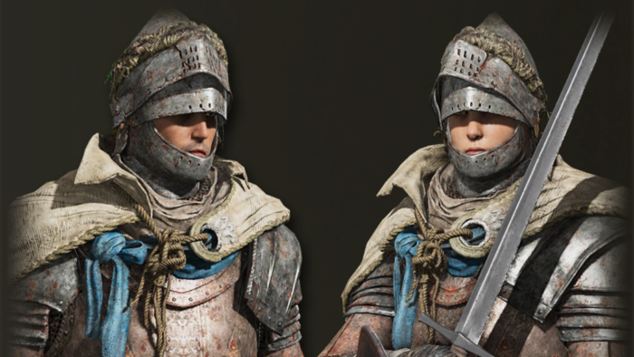

O Vagabundo é um guerreiro resistente e equilibrado, especializado em combate corpo a corpo com espada e escudo pesado.
Começa sua jornada com excelente defesa, alta vitalidade e equipamentos robustos, sendo ideal para jogadores que preferem segurança e resistência em batalha.
Sua combinação de força, armadura pesada e sobrevivência faz desta uma das classes mais sólidas para enfrentar os perigos das Terras Intermédias.